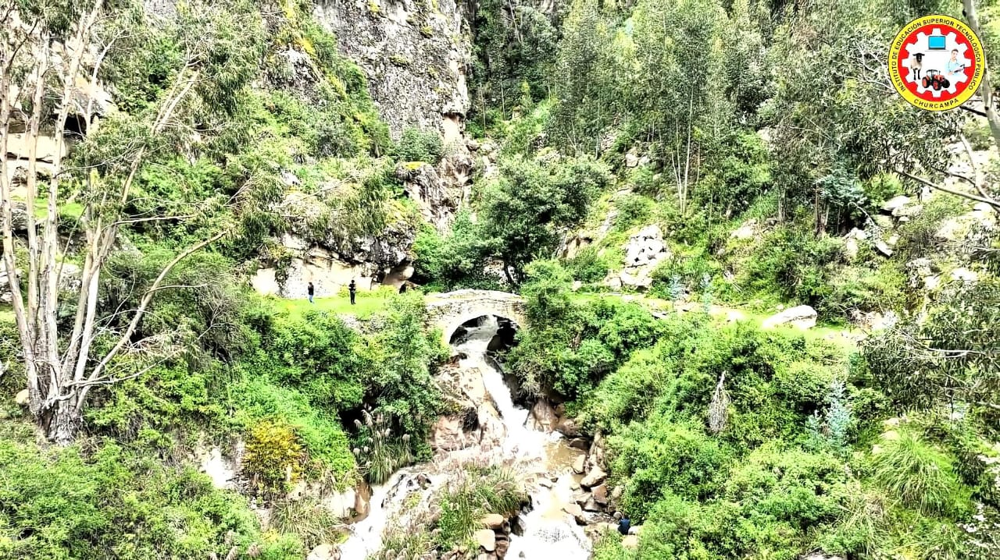
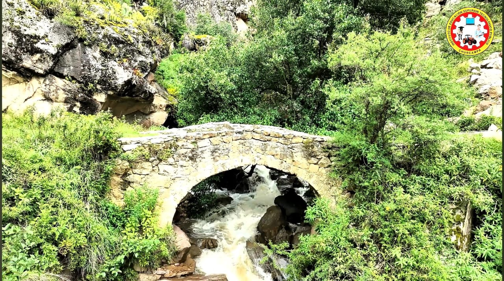

HISTORIA DEL CHORRO
El Puente Inca de Camiama es una estructura histórica situada en la provincia de Churcampa, en la región de Huancavelica, Perú. Este puente es un testimonio de la arquitectura y la ingeniería desarrollada por los incas, utilizando materiales locales como la piedra y técnicas avanzadas para la época.
Los puentes incas se caracterizan por su resistencia y durabilidad, a menudo construidos en lugares estratégicos para conectar caminos del Qhapaq Ñan, la red de caminos del Imperio Inca. El puente de Camiama habría servido como parte de esta red para facilitar el tránsito entre distintas zonas de la región de Huancavelica y otras áreas adyacentes.
¡No dejes de Visitar!
Algunas fotografías
- 
- 
-

-